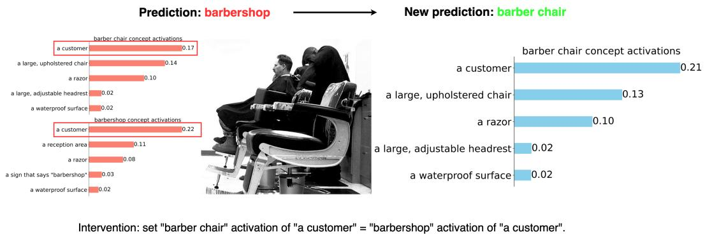

arXiv 新增 + NeurIPS 2025 MI workshop + CLIP interpretability · P2 · 2026-06-20
Multimodal Concept Bottleneck Models：CLIP/VLM 表征是否可解释、是否真对齐语言概念，是通用视觉表征评估的重要维度
让 zero-shot classification、image retrieval 等开放视觉任务在概念空间中可解释，同时减少固定类别 CBM 的限制和非概念信息泄漏。
编号2606.19882
优先级P2
类别arXiv 新增 + NeurIPS 2025 MI workshop + CLIP interpretability
会议arXiv 新增 + NeurIPS 2025 MI workshop + CLIP interpretability
方法MM-CBM 在 CLIP 上引入 dual Concept Bottleneck Layers，把 image 和 text embeddings 同时对齐到可解释概念特征。
来源arXiv / OpenReview
先说结论。CLIP/VLM 表征是否可解释、是否真对齐语言概念，是通用视觉表征评估的重要维度。 让 zero-shot classification、image retrieval 等开放视觉任务在概念空间中可解释，同时减少固定类别 CBM 的限制和非概念信息泄漏。


核心问题
CLIP/VLM 表征是否可解释、是否真对齐语言概念，是通用视觉表征评估的重要维度。
方法拆解
MM-CBM 在 CLIP 上引入 dual Concept Bottleneck Layers，把 image 和 text embeddings 同时对齐到可解释概念特征。
主要贡献
让 zero-shot classification、image retrieval 等开放视觉任务在概念空间中可解释，同时减少固定类别 CBM 的限制和非概念信息泄漏。
实验看点
摘要称在四个标准 benchmark 上平均最高提升 51.26%，且相对黑盒性能只差约 5%。
局限与读法
workshop 论文，实验细节和概念集构造需要复核；概念瓶颈可能牺牲细粒度非语言化视觉信息。